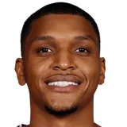
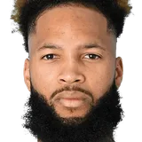
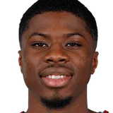

Played 1 season for 2 teams; his teams went 2–3 in his games.
Jump to: Record by opponent · Season by season · Teammate help
Compare Zach Norvell with…
Final NBA finish, season by season
Title Finals Other playoffs Missed playoffs. #1 = champion; the dashed line is last place that season. Each point opens that season's final standings.
All 30 teams ranked in 2019-20, his best finish (#30)Teammate help
 Eric Paschall0.21 season
Eric Paschall0.21 season
Career
Career records (W–L, W − L, with and without) include 2026-27 games through Nov. 23, 2026; season counts and finishes are through 2025-26. Each card opens its board in the same scope. How we count.

Latest completed seasons
- 2019-20·
 Golden State·#30 of 3015–50 · Missed playoffs
Golden State·#30 of 3015–50 · Missed playoffs
Season by season
Newest first; every header sorts. Final NBA finish is the team's rank among all teams that season (#1 = champion) and opens that season's standings. "Without him" uses the team-season window; the span line counts only the games between his first and last game for the team.
| 2019-20 | #1 of 30 | 52–19 73.2% | Title 4–2 | 2 of 71 | 2–0 100.0% | 36–12 75.0%span: N/A, gap N/A | +25.0 | |
| 2019-20 | #30 of 30 | 15–50 23.1% | Missed playoffs | 3 of 65 | 0–3 0.0% | 15–45 25.0%span: N/A, gap N/A | −25.0 |
On/off, starts and close games
From the lineup data, 1996-97 on. On/off is net points per 100 possessions with him on the floor minus off, a different unit from the win-rate gaps. Started and off the bench are team records in those games; close games are those within 5 points in the last 5 minutes with him on the floor.
| 2019-20 | −52.5 | 2–0 100.0% | N/A | |
| 2019-20 | −33.6 | 0–3 0.0% | 0–1 0.0% |
Teammate help by season
Two separate numbers per season, each with every teammate that adds to it. Help this season = Teammates Score points for honors won that season by teammates who shared a game with him. Help coming in = the same teammates' honors from the season before. How help works.
- 2019-20
 LA Lakers
LA Lakers
 LeBron James Finals MVPAll-NBA 1stAll-Star152 g
LeBron James Finals MVPAll-NBA 1stAll-Star152 g Anthony Davis All-NBA 1stAll-StarAll-Def 1st62 g
Anthony Davis All-NBA 1stAll-StarAll-Def 1st62 g
Help this season: 21 = 15 LeBron James + 6 Anthony Davis
More: help coming in and other teammates
Help coming in (teammates' honors the season before): 4 = 3 LeBron James + 1 Anthony Davis
Other teammates (no honors that season): Dwight Howard 2 g, Troy Daniels 2 g, Kentavious Caldwell-Pope 2 g, Avery Bradley 2 g, Danny Green 2 g, JaVale McGee 2 g, Jared Dudley 2 g, Kostas Antetokounmpo 2 g, Alex Caruso 2 g, Quinn Cook 2 g
- 2019-20Golden State
Eric Paschall All-Rookie 1st0.253 g
Help this season: 0.25 = 0.25 Eric Paschall
More: help coming in and other teammates
Help coming in (teammates' honors the season before): 0.5 = 0.5 Draymond Green
Other teammates (no honors that season): Andrew Wiggins 3 g, Jeremy Pargo 3 g, Jordan Poole 3 g, Alen Smailagic 3 g, Juan Toscano-Anderson 3 g, Ky Bowman 3 g, Damion Lee 3 g, Marquese Chriss 3 g, Draymond Green 2 g, Kevon Looney 2 g
Record against each opponent
Regular season, through 2025-26 (2026-27 games not included): 5 games, 2–3, against 5 franchises.
Grouped by franchise (named as today); game lists keep each team's name that season. Filters and the tab are kept in the URL, so a filtered view can be shared.
| Games list | |||||||
|---|---|---|---|---|---|---|---|
| 1 | 1–0 | 100.0% | +1 | N/A | 2019-20 | ||
| 1 | 0–1 | 0.0% | −1 | N/A | 2019-20 | ||
| 1 | 0–1 | 0.0% | −1 | N/A | 2019-20 | ||
| 1 | 0–1 | 0.0% | −1 | N/A | 2019-20 | ||
| 1 | 1–0 | 100.0% | +1 | N/A | 2019-20 |
Rows add up to his career record in his games. A playoff series counts when he played in it; early round-robin games show as games only. How we count.
Arrival and departure
Team wins per 82 games the season before he arrived vs his first season there, and his last season vs the season after he left. He leaves a team only when his next season with games is for another team (or he never plays again); whole seasons he missed and came back from are one "Missed" row with the team's record without him. Per 82 so short seasons compare fairly. These are team records, not a measure of what he did.
| Left | after 2019-20 | 2019-20: 52–19 60.1 per 82 | 2020-21: 42–30 47.8 per 82 without him | −12.2 wins | |
| Left | after 2019-20 | 2019-20: 15–50 18.9 per 82 | 2020-21: 39–33 44.4 per 82 without him | +25.5 wins | |
| Debut | 2019-20 | 2018-19: 37–45 37.0 per 82 | 2019-20: 52–19 60.1 per 82 | +23.1 wins | |
| Arrived | 2019-20 | 2018-19: 57–25 57.0 per 82 | 2019-20: 15–50 18.9 per 82 | −38.1 wins |
Seasons split between teams
Each team's record before his first game for it, inside his window (games with and without him) and after his last game, in the seasons he played for two or more teams.
| 2019-20 | Oct. 25, 2019 to Oct. 27, 2019 | N/A | 38–12 76.0% | 14–7 66.7% | 2 | |
| 2019-20 | Feb. 8, 2020 to Feb. 12, 2020 | 0–2 0.0% | 15–48 23.8% | N/A | 3 |
With and without his teammates
His 12 teammates with the most regular-season games together. "Together" is the team's record in the games both played for it; "Without him" is the team's record in the games Zach Norvell played for that team while the teammate was on it (between the teammate's first and last game for the team, the appearance span) and the teammate did not play. Fewer than 20 games without him: no gap. Games through Nov. 23, 2026. How we count.
 Marquese ChrissGolden State 2019-20
Marquese ChrissGolden State 2019-20- Together
- 0–3 0.0%
- Without him
- N/A N/A
- Gap
- Too few games without him
 Damion LeeGolden State 2019-20
Damion LeeGolden State 2019-20- Together
- 0–3 0.0%
- Without him
- N/A N/A
- Gap
- Too few games without him

Ky BowmanGolden State 2019-20- Together
- 0–3 0.0%
- Without him
- N/A N/A
- Gap
- Too few games without him

- Together
- 0–3 0.0%
- Without him
- N/A N/A
- Gap
- Too few games without him
- Alen SmailagicGolden State 2019-20
- Together
- 0–3 0.0%
- Without him
- N/A N/A
- Gap
- Too few games without him
- Eric PaschallGolden State 2019-20
- Together
- 0–3 0.0%
- Without him
- N/A N/A
- Gap
- Too few games without him
 Jordan PooleGolden State 2019-20
Jordan PooleGolden State 2019-20- Together
- 0–3 0.0%
- Without him
- N/A N/A
- Gap
- Too few games without him
 Jeremy PargoGolden State 2019-20
Jeremy PargoGolden State 2019-20- Together
- 0–3 0.0%
- Without him
- N/A N/A
- Gap
- Too few games without him
 Andrew WigginsGolden State 2019-20
Andrew WigginsGolden State 2019-20- Together
- 0–3 0.0%
- Without him
- N/A N/A
- Gap
- Too few games without him
 Quinn CookLA Lakers 2019-20
Quinn CookLA Lakers 2019-20- Together
- 2–0 100.0%
- Without him
- N/A N/A
- Gap
- Too few games without him
 Alex CarusoLA Lakers 2019-20
Alex CarusoLA Lakers 2019-20- Together
- 2–0 100.0%
- Without him
- N/A N/A
- Gap
- Too few games without him

Kostas AntetokounmpoLA Lakers 2019-20- Together
- 2–0 100.0%
- Without him
- N/A N/A
- Gap
- Too few games without him